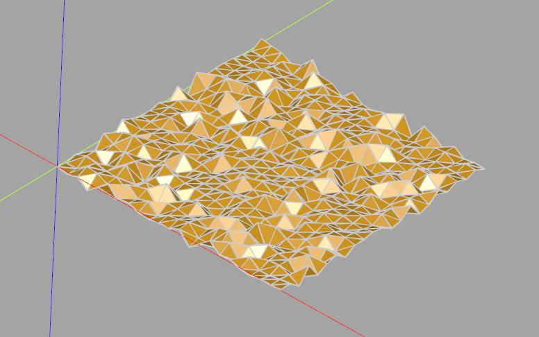
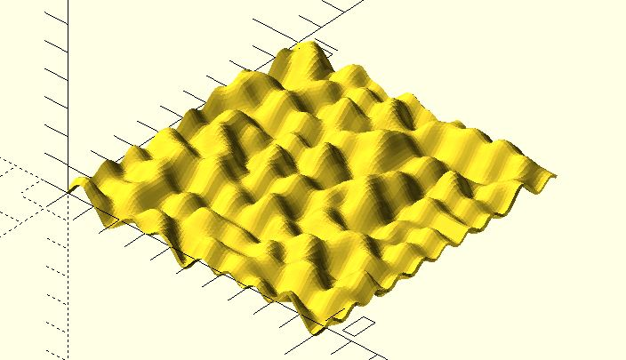
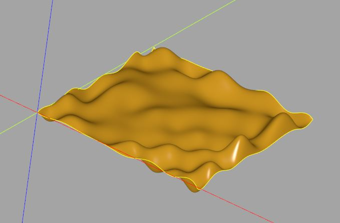

Perlin 雜訊
November 27, 2021如果你有看過〈笨學資料運算〉中的〈NumPy 與 Perlin 雜訊〉與〈Matplotlib 圖片、等值輪廓線〉，可能會想到，能不能將二維的 Perlin 雜訊作為曲面資料，搭配〈建立網格面〉的 surface 來建立曲面呢？
網格面的實現
基本上是可以，不過…嗯…先來看看實作吧！將〈Matplotlib 圖片、等值輪廓線〉中的程式稍微修改一下：
...搭配〈建立網格面〉中的 surface
# Perlin noise 實作
def blending(t):
return 6 * (t ** 5) - 15 * (t ** 4) + 10 * (t ** 3)
def lerp(g1, g2, t):
return g1 + t * (g2 - g1)
def grad2(hashvalue, dx, dy):
return [dy, dx + dy, dx, dx - dy, -dy, -dx - dy, -dx, -dx + dy][hashvalue % 8];
rand_table = np.random.randint(255, size = 256).tolist()
# 增加一個 zScale 參數
def _perlin2(x, y, zScale):
xi = floor(x)
yi = floor(y)
aa = rand_table[
(rand_table[xi % 256] + yi) % 256
]
ba = rand_table[
(rand_table[(xi + 1) % 256] + yi) % 256
]
ab = rand_table[
(rand_table[xi % 256] + yi + 1) % 256
]
bb = rand_table[
(rand_table[(xi + 1) % 256] + yi + 1) % 256
]
dx = x - xi
dy = y - yi
u = blending(dx)
v = blending(dy)
g1 = lerp(grad2(aa, dx, dy), grad2(ba, dx - 1, dy), u)
g2 = lerp(grad2(ab, dx, dy - 1), grad2(bb, dx - 1, dy - 1), u)
# 傳回座標，其中雜訊值是 z
return (x, y, lerp(g1, g2, v) * zScale)
_perlin2 = np.frompyfunc(_perlin2, 3, 1)
def perlin2(x, y, zScale):
cx, cy = np.meshgrid(x, y)
return _perlin2(cx, cy, zScale)
width = 25
step = 1.1
zScale = 2
thickness = 0.1
x = np.arange(0, width, step)
y = np.arange(0, width, step)
points = perlin2(x, y, zScale)
show_object(surface(points, thickness))
因為 surface 需要一組座標，因此 perlin2 最後傳回的是座標值，其中雜訊值是 z，增加一個 zScale 是為了調整 z 的大小，來看一下執行後的畫面：

嗯？看來很不連續？這是因為 step 取得比較大，若要得到更細緻的起伏，必須縮小 step，不過，在 CadQuery 中建立面其實是很昂貴的，而且太多面的話，要在 CQ-editor 中顯示，CQ-editor 會跑很久甚至當掉。
CadQuery 本身採用 BREP，並不鼓勵這種自行建立多面體的做法，這跟 OpenSCAD 是相對的，多面體的做法比較適合在 OpenSCAD 中做，例如，對應的做法並將 step 縮小後，OpenSCAD 可以做出以下模型：

使用 makeSplineApprox
那麼 CadQuery 沒機會做出這個模型了嗎？其實還是有的，在〈建立網格面〉不是看過 Face.makeSplineApprox 嗎？你可以指定控制點，然後它會以內插法計算出必要的資料，建立起曲面，也就是說，你只要提供適當的 step，建立相對少量的資料，也能建立起接近 Perlin 雜訊建立的曲面：
from math import floor
import numpy as np
from cadquery import Workplane, Face, Vector
# Perlin noise 實作
def blending(t):
return 6 * (t ** 5) - 15 * (t ** 4) + 10 * (t ** 3)
def lerp(g1, g2, t):
return g1 + t * (g2 - g1)
def grad2(hashvalue, dx, dy):
return [dy, dx + dy, dx, dx - dy, -dy, -dx - dy, -dx, -dx + dy][hashvalue % 8];
rand_table = np.random.randint(255, size = 256).tolist()
def _perlin2(x, y, zScale):
xi = floor(x)
yi = floor(y)
aa = rand_table[
(rand_table[xi % 256] + yi) % 256
]
ba = rand_table[
(rand_table[(xi + 1) % 256] + yi) % 256
]
ab = rand_table[
(rand_table[xi % 256] + yi + 1) % 256
]
bb = rand_table[
(rand_table[(xi + 1) % 256] + yi + 1) % 256
]
dx = x - xi
dy = y - yi
u = blending(dx)
v = blending(dy)
g1 = lerp(grad2(aa, dx, dy), grad2(ba, dx - 1, dy), u)
g2 = lerp(grad2(ab, dx, dy - 1), grad2(bb, dx - 1, dy - 1), u)
# 傳回座標的 Vector 實例，其中雜訊值是 z
return Vector(x, y, lerp(g1, g2, v) * zScale)
_perlin2 = np.frompyfunc(_perlin2, 3, 1)
def perlin2(x, y, zScale):
cx, cy = np.meshgrid(x, y)
return _perlin2(cx, cy, zScale)
width = 200
step = 20.1
zScale = 10
x = np.arange(0, width, step)
y = np.arange(0, width, step)
points = perlin2(x, y, zScale)
show_object(Face.makeSplineApprox(points))
注意到 perlin2 傳回的資料是由 Vector 構成，這是為了配合 Face.makeSplineApprox，這次還增加了雜訊的平面範圍，來看看效果如何：
